Manual Tuning

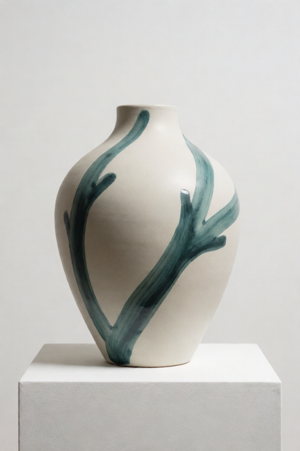
Manual mode is for deliberate control. In this demo the card borrows
colors and art style, uses palette wash, lowers
Shape copied, and raises Overall style reach.
Krea Reference lets each source image have a clear job. Use one image for subject, another for style, another for lighting, another for material, and another to keep text or logos from being copied.
Start with one guide card per image. Choose Use image for,
set How strongly this image guides, and let the V9 stack
combine all connected cards with your written prompt.
docs/assets/krea-v9/demos/ contain ComfyUI workflow metadata.
Drag one of those PNGs into ComfyUI to load the matching demo workflow.

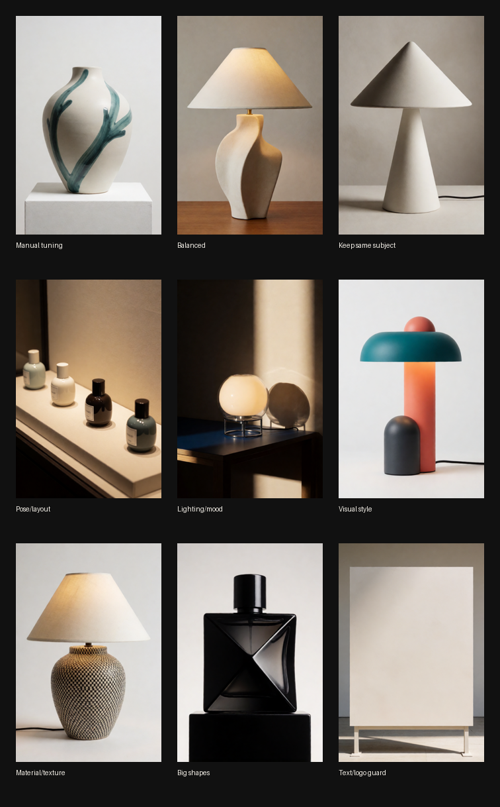
Use the prompt for the final image idea: product, scene, material, camera, and constraints.
Every image card should have one primary job. This is easier to control than one large image prompt.
Start low. Raise only the card that is too subtle. Strong references can overpower the prompt.
Smart timing lets structure guide early while style and material can influence the final finish.
Use image for is the main creative control on the guide card.
The quick recipes fill in the lower-level manual controls for you. Use
manual tuning when you want those lower controls to count.

Manual mode is for deliberate control. In this demo the card borrows
colors and art style, uses palette wash, lowers
Shape copied, and raises Overall style reach.
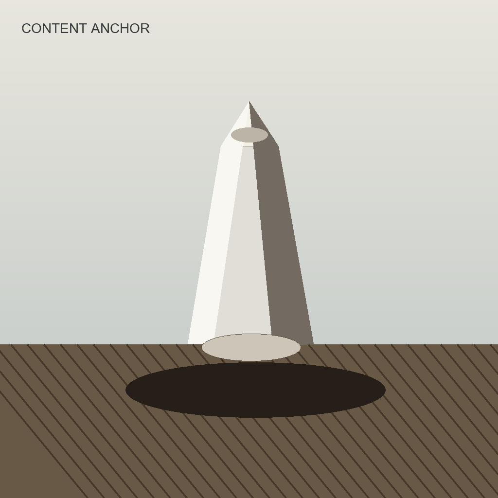
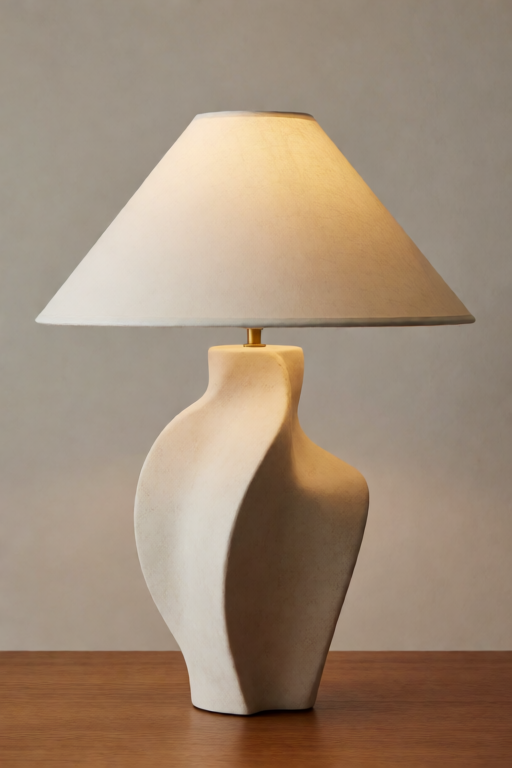
Balanced is a general-purpose image reference. It is useful when the source image is a loose guide for subject, camera, color, and mood all at once.
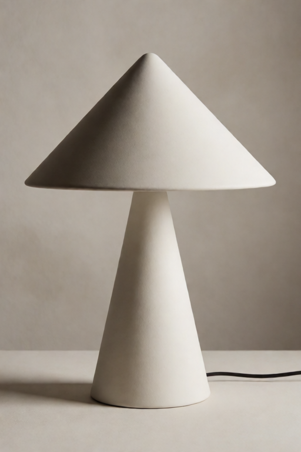
Use this when the product, character, outfit, person, or object must
remain recognizable. This recipe is the one place where high strength
values such as 0.70 to 0.85 often make sense.

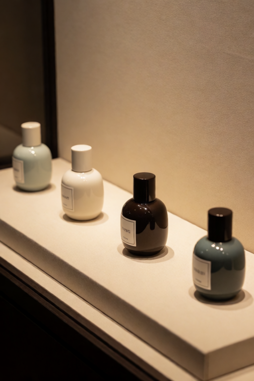
This recipe borrows structure: pose, camera, crop, spacing, and broad placement. It suppresses subject copying, color copying, and exact texture so the prompt can decide what appears in that layout.
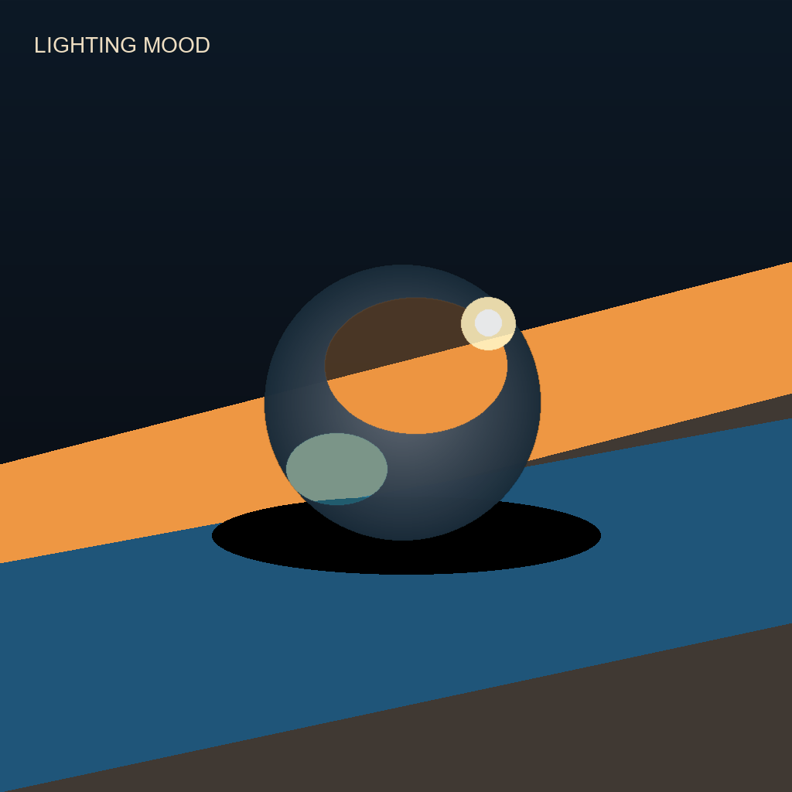
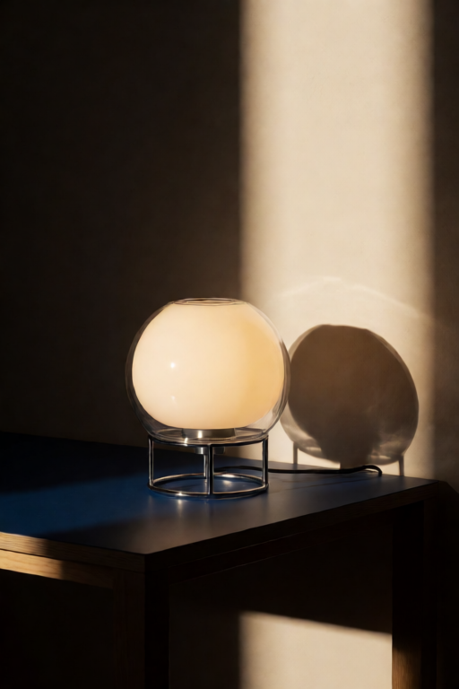
Use this when you want atmosphere without identity. Good targets are light direction, shadow behavior, glow, haze, contrast, and color cast.
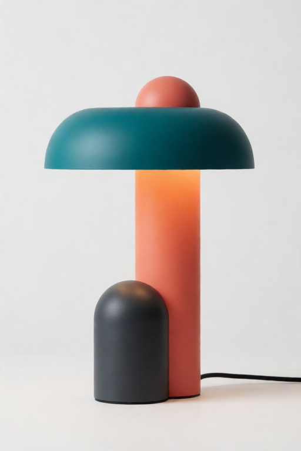
This is the main style-transfer recipe. It borrows palette, finish,
medium, and atmosphere while avoiding the style image's subject. If it
starts changing the subject too much, lower strength toward
0.35 to 0.50.
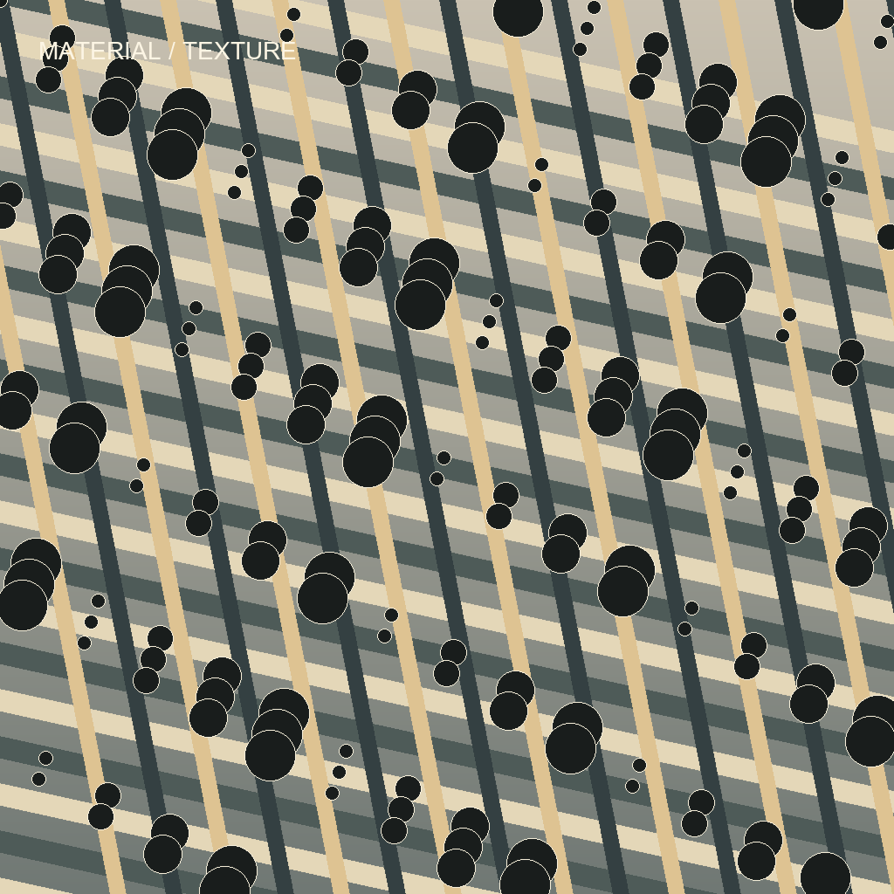
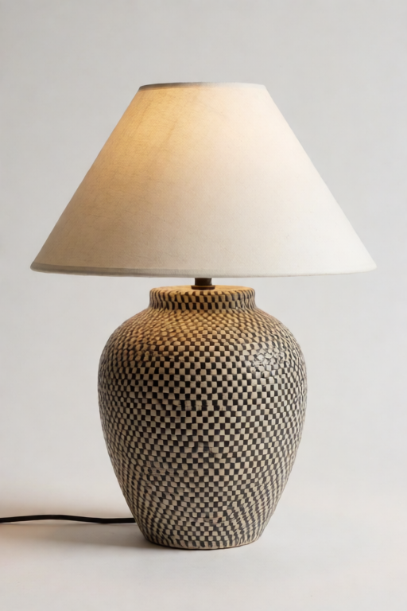
Use this for material feel: woven ceramic, stone, paper grain, fabric,
brushed metal, painted finish, and similar surfaces. If the exact
pattern copies too strongly, lower strength or use manual tuning with
lower Small details kept.
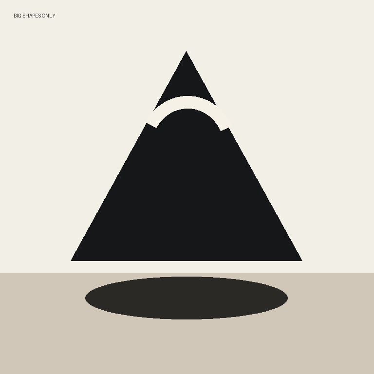
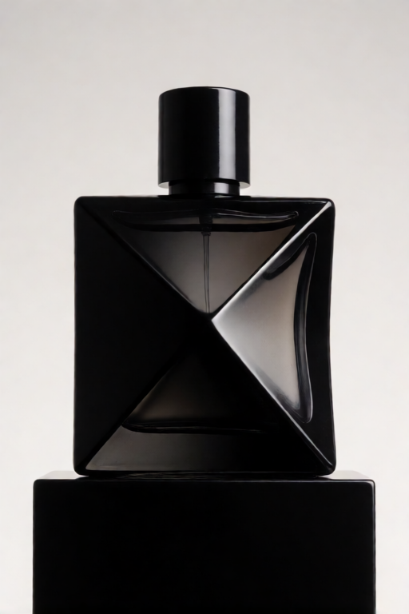
Shape-only mode is for broad geometry, silhouette, massing, and spacing. It intentionally removes color and detail influence.
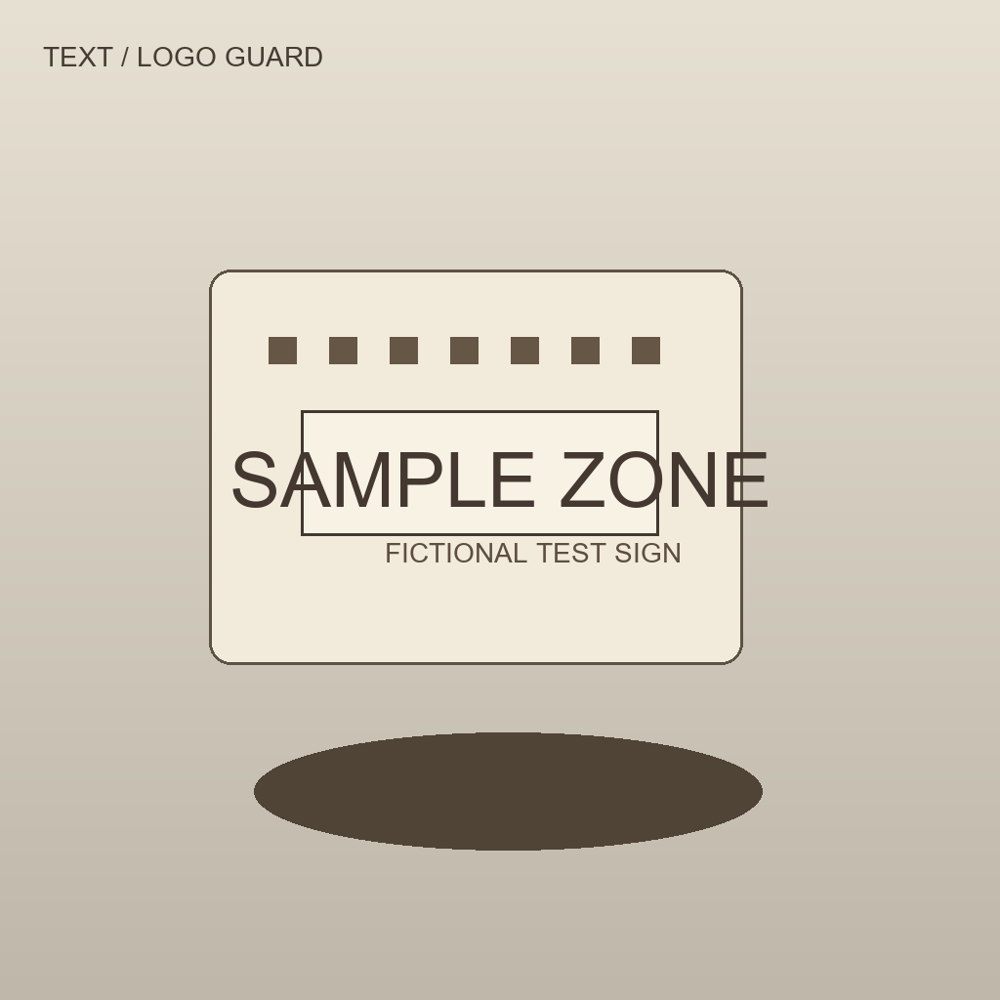
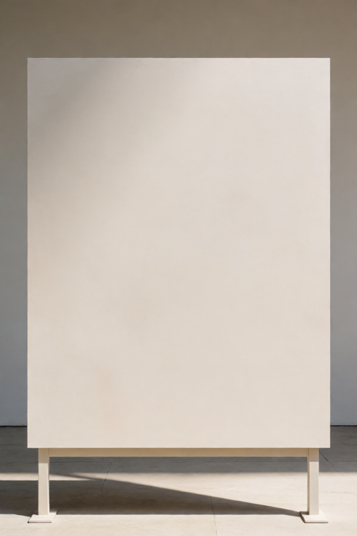
Use this for signs, logos, UI, labels, screenshots, labels on packaging, letter-like marks, or any source image that contains words. Keep strength very low. The recipe caps effective image pull to protect the output from copied text.
Manual controls count only when Use image for is
manual tuning. In quick recipe mode, the recipe supplies
tested values for these lower controls.
| Control | Use It For |
|---|---|
Manual mode borrows | Choose the ingredient: style, palette, layout, framing, identity, environment, lighting, mood, material, shape, or text/logo safety. |
Prepare image by | Simplify the source before Krea studies it: grayscale, blur, palette wash, color wash, shape cleanup, or original image. |
Color kept | Lower it when you want shape or layout without palette influence. |
Small details kept | Lower it to avoid exact grain, letters, tiny marks, and over-copying. |
Study this image at | Override the global image detail level for this one card. |
Frame this reference by | Override the global framing mode for this one card. |
Subject copying | Tell the stack whether the source subject should be avoided, allowed, or preserved. |
Early layout guidance | Controls how much the card helps early composition when timing is smart or two-phase. |
Final detail copying | Controls how much late detail can come through near the end. |
Maximum image pull | Caps a manual card even if the main strength is high. |
Shape copied | Spatial or subject-structure pull. Lower it for pure style, palette, lighting, or material. |
Overall style reach | Global tone, palette, finish, and atmosphere pull. Raise it when manual style is too subtle. |
The stack encoder receives your Krea CLIP, your final prompt, and up to 12 guide cards. It turns them into the positive conditioning that goes into KSampler.
Use 1.0 as normal. Raise it when the prompt should win over references. Use 0.0 for blank-prompt image mixing.
artist friendly is the best default. extra gentle helps when references dominate at low values.
Low is safer and looser. High studies more detail, which can help exact style but can also over-copy.
Keep full image shape unless a reference should be center-cropped or stretched to square before study.
smart per-card timing lets each card use its resolved early and late behavior. This is the default.
full guard rewrites marking words into blank-surface language. gentle guard keeps your prompt words and appends protection.
| Strength | What It Usually Means | Good Uses |
|---|---|---|
0.00 | Off. | Keep a card connected but inactive. |
0.03 to 0.08 | Tiny nudge. | Text/logo guard, shape hints, stubborn prompts. |
0.10 to 0.25 | Gentle guidance. | Layout, material, mood-board influence. |
0.25 to 0.45 | Strong guidance. | Lighting, texture, pose, broad style. |
0.50 to 0.90 | Very strong. | Content anchor or deliberate style transfer. Watch for over-copying. |
A good multi-reference setup gives every source image a separate job. Do not ask every image to do everything.
keep the same subject for the product, suggest the visual style for art direction, and copy lighting and mood for the lighting reference.
Image 1: content anchor. Image 2: visual style. Leave the prompt blank for pure image-to-image style mixing, or add a short prompt for a guided result.
Use a normal product or layout card, then add a text/logo guard card for labels, signs, screens, or logo-shaped panels.
Reference 1: keep the same subject, strength 0.80
Reference 2: suggest the visual style, strength 0.45 to 0.65
Reference 3: copy lighting and mood, strength 0.30 to 0.45
Reference 4: avoid copying text/logos, strength 0.03Every individual recipe PNG below was saved by ComfyUI with workflow metadata in the PNG. Drag the PNG file into ComfyUI to load the demo. The companion workflow JSON is included for users who prefer opening a workflow file directly.
example_assets/krea-reference-examples/ into your ComfyUI
input/ folder so paths such as
krea-reference-examples/slot1_content_anchor.png resolve.
| Problem | What To Try |
|---|---|
| The reference is too bossy. | Lower card strength, switch Image slider feel to extra gentle, or raise Written prompt strength. |
| The prompt is ignored. | Raise Written prompt strength, reduce the strongest card, or use more specific prompt language. |
| Style changes the subject. | Lower style strength, use suggest the visual style, or in manual mode lower Shape copied. |
| Material copies too literally. | Lower strength, lower Small details kept, or use suggest material or texture. |
| Text or logos appear. | Use avoid copying text/logos, strength around 0.03, low detail, and blank-surface prompt wording. |
| Layout gets too tight. | Lower the layout card, use smart per-card timing, or reduce Final detail copying in manual mode. |
{kind=link}
{kind=link}
{kind=link}
{kind=link}
{kind=link}
{kind=link}
{kind=link}
{kind=link}
{kind=link}